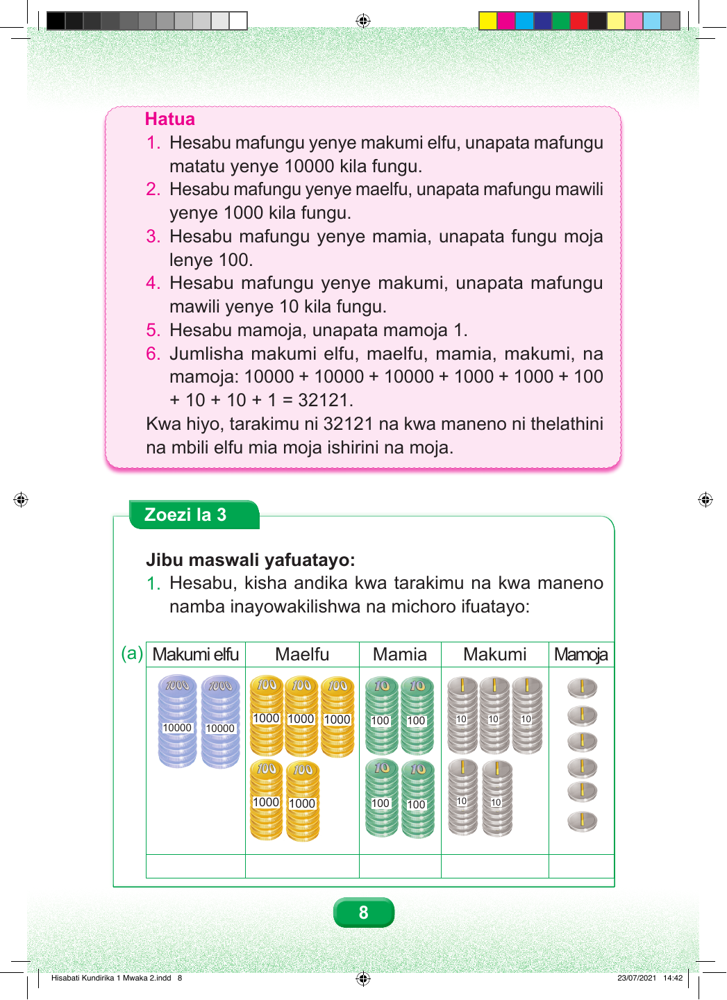

Hatua Hatua ya kwanza. Hesabu mafungu yenye makumi elfu, unapata mafungu matatu yenye elfu kumi kila fungu. Hatua ya pili. Hesabu mafungu yenye maelfu, unapata mafungu mawili yenye elfu moja kila fungu. Hatua ya tatu. Hesabu mafungu yenye mamia, unapata fungu moja lenye mia moja. Hatua ya nne. Hesabu mafungu yenye makumi, unapata mafungu mawili yenye kumi kila fungu. Hatua ya tano. Hesabu mamoja, unapata mamoja moja. Hatua ya sita. Jumlisha makumi elfu, maelfu, mamia, makumi, na mamoja: elfu kumi jumlisha elfu kumi jumlisha elfu kumi jumlisha elfu moja jumlisha elfu moja jumlisha mia moja jumlisha kumi jumlisha kumi jumlisha moja, sawa sawa na thelathini na mbili elfu mia moja ishirini na moja. Kwa hiyo, tarakimu ni 32121 na kwa maneno ni thelathini na mbili elfu mia moja ishirini na moja. Zoezi la Tatu Jibu maswali yafuatayo: 1. Hesabu au eleza, kisha andika kwa tarakimu na kwa maneno namba inayowakilishwa na michoro ifuatayo: Mchoro a unasomwa kutoka kulia kwenda kushoto. Mamoja yana sarafu sita. Makumi yana mafungu matano ya sarafu. Mamia yana mafungu manne ya sarafu. Maelfu yana mafungu matano ya sarafu. Makumi elfu yana mafungu mawili ya sarafu. 8 Hisabati Kundirika 1 Mwaka 2.indd 8 23/07/2021 14:42